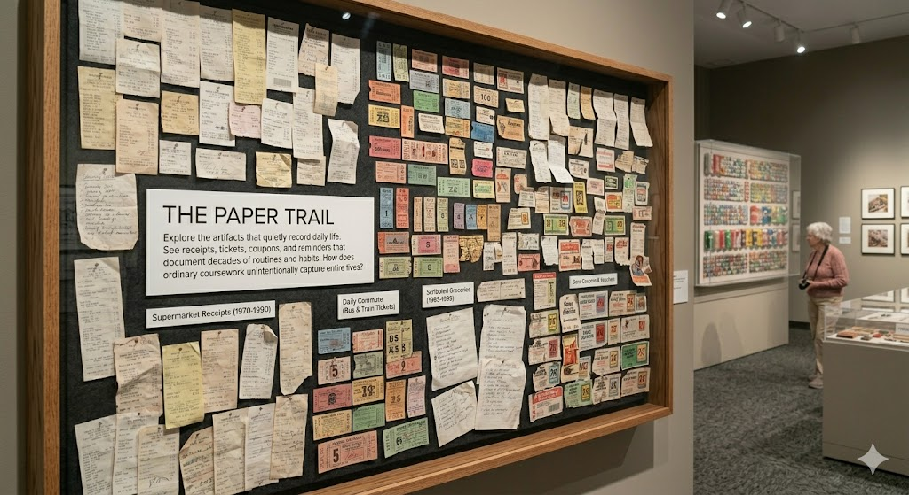
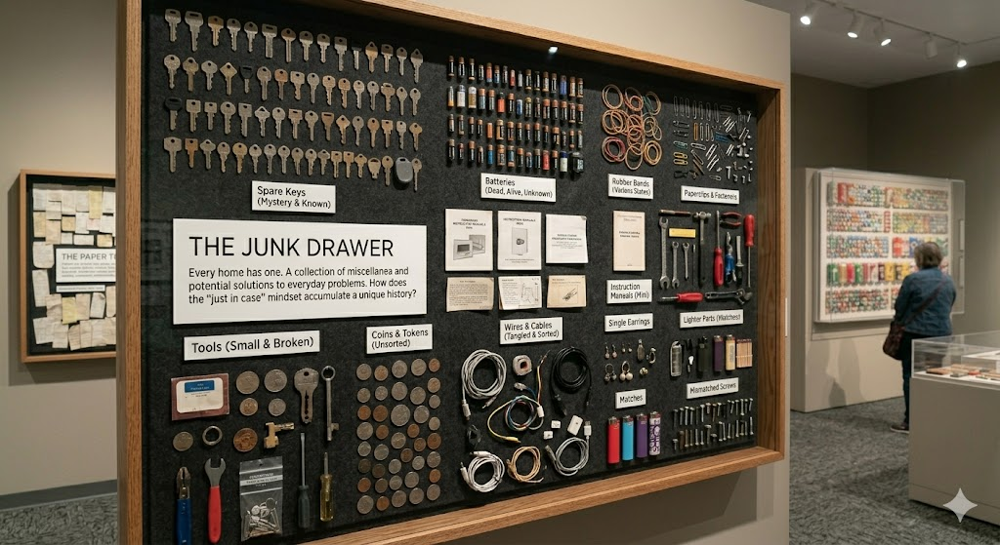
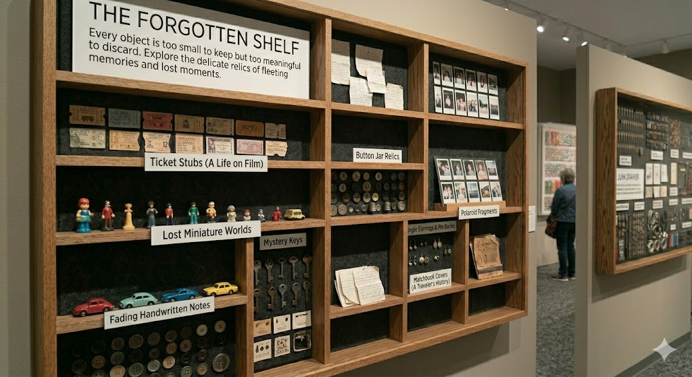

Featured Exhibitions

Exhibition 1: The Paper Trail
This exhibition focuses on the thin, crumpled paper artifacts that quietly record daily life. Receipts, bus tickets, store coupons, and scribbled reminders show how ordinary paperwork can unintentionally document entire decades of routines, purchases, and habits.

Exhibition 2: The Junk Drawer
Every home has one. This exhibition recreates the classic junk drawer, filled with spare batteries, mystery keys, rubber bands, instruction manuals, and other objects that are kept “just in case.” Seen together, these small items form a strangely familiar portrait of everyday life.

Exhibition 3: The Forgotten Shelf
This exhibition features the overlooked shelf in many homes that collects objects that are too small to display but too meaningful to throw away. From old ticket stubs to faded photographs, these items tell stories of past experiences and memories that might otherwise be forgotten.